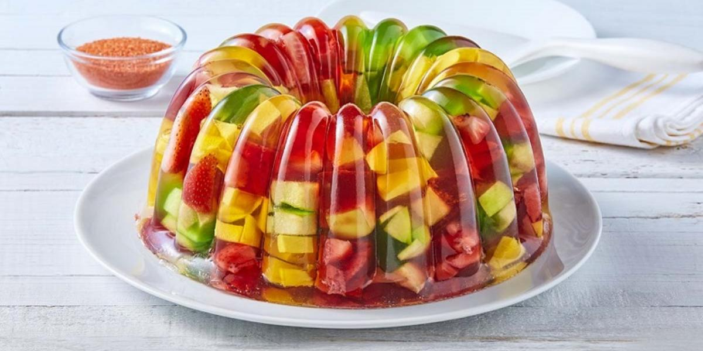
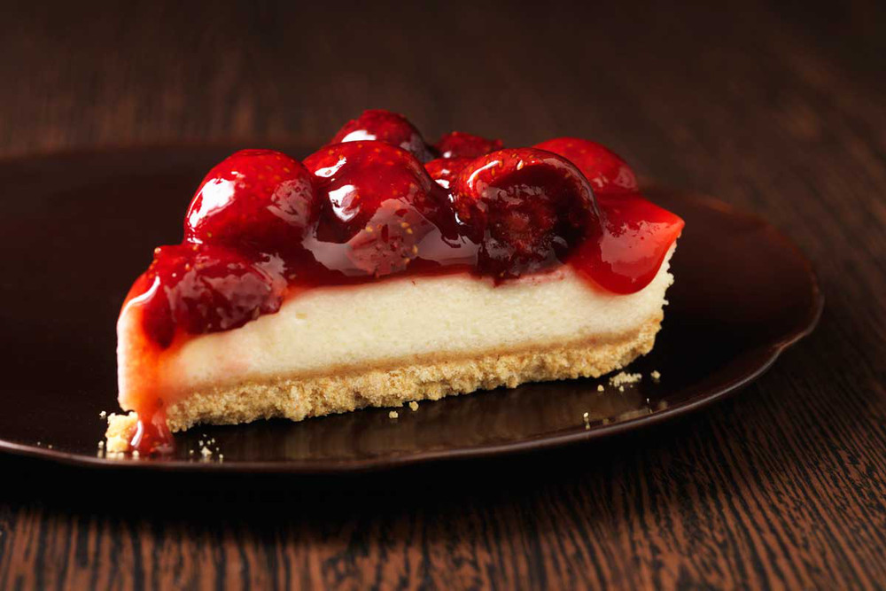
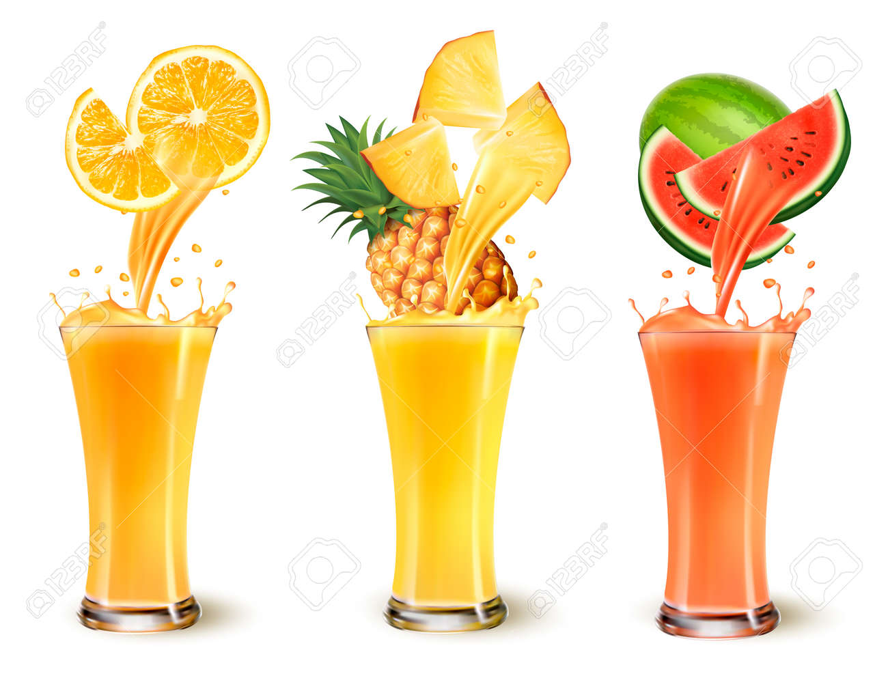

ALIMENTOS Y BEBIDAS
ALIMENTOS "POSTRES"
PANNA COTTA
GELATINA
PASTEL
CHEESECAKE
PAVLOVA
PANNA COTTA
GELATINA

PASTEL
CHEESECAKE

PAVLOVA
POSTRE
El postre es el plato de sabor dulce o agridulce que se toma al final de la comida, o de merienda. Cuando se habla de postres se entiende alguna preparación dulce, bien sean cremas, tartas, pasteles, helados, bombones, etc. Por extensión se denomina postre a cualquier comida dulce incluso si su objetivo no es ser ingerida al final de la comida. Algunos ejemplos son las galletas , chocolates y magdalenas. Los postres han sido siempre el broche de oro de una comida. Un buen postre, resaltará la satisfacción de los alimentos anteriores. En muchos casos se planean como una agradable sorpresa, pero realmente constituyen también un complemento importante al aporte de nutrientes en la alimentación diaria. Contienen elementos nutritivos como frutas, leches, huevos y elementos energéticos como azúcares y grasas. Hay postres que se preparan al momento o con anticipación, con el fin de agradar al paladar ya que existen postres en todas las temperaturas y texturas (al tiempo, calientes, fríos, helados y mixtos).
BEBIDAS "JUGOS NATURALES"
JUGO DE NARANJA
JUGO DE PIÑA
JUGO DE SANDIA

JUGOS NATURALES
Los jugos naturales son fuente importante para tener un aliento fresco, piel tersa y suave, flexibilidad en las articulaciones. Con el mango, la manzana, el melón, el limón, la naranja, la guayaba, la fresa, la uva, la piña, la mandarina y la sandía se preparan ricas, refrescantes y saludables combinaciones de jugos en cualquier temporada del año.